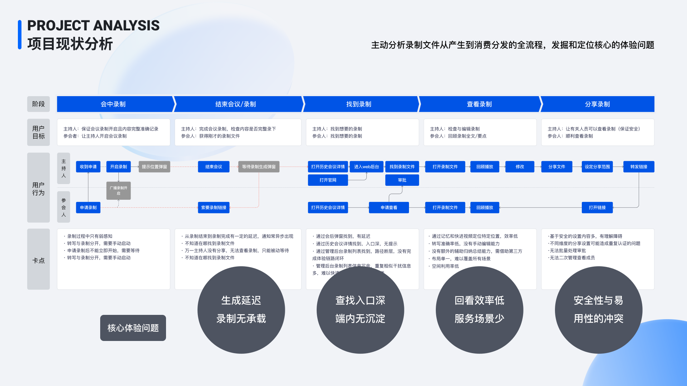
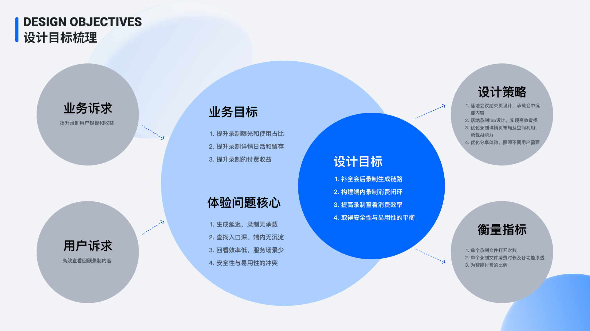
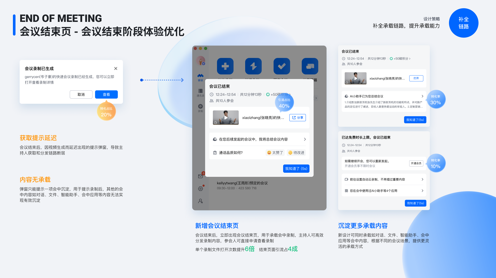
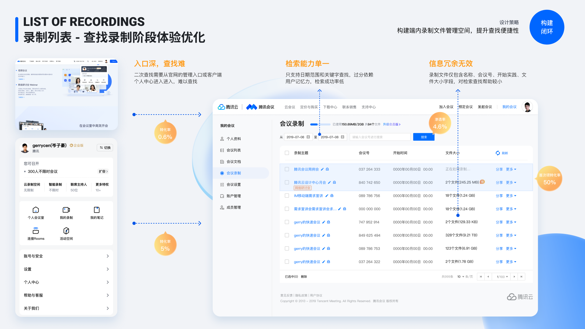
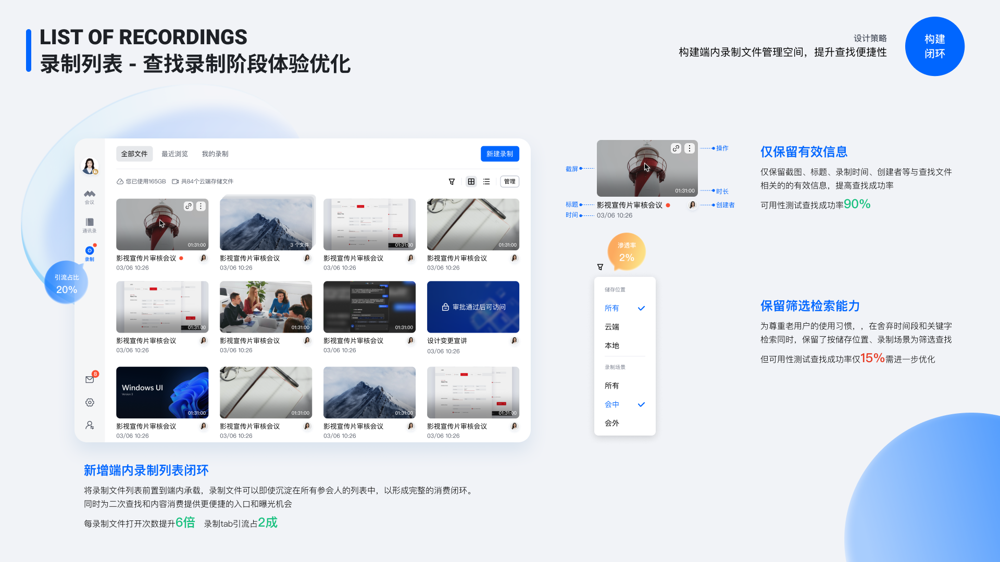
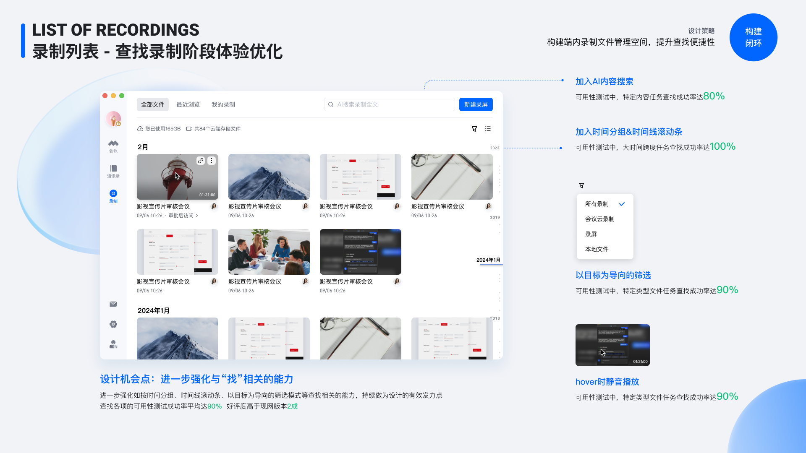
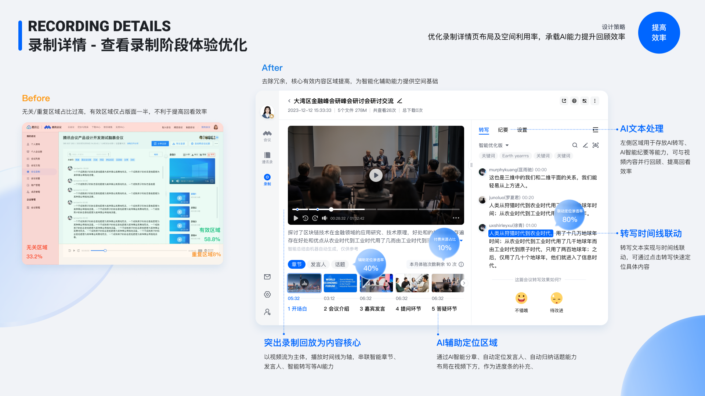
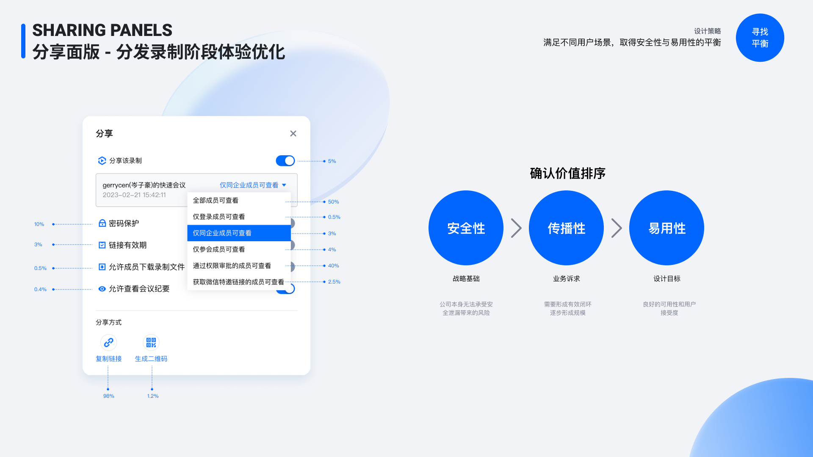
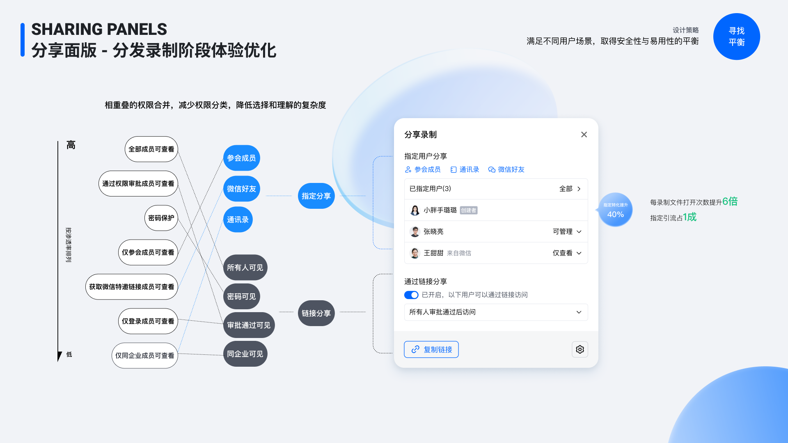
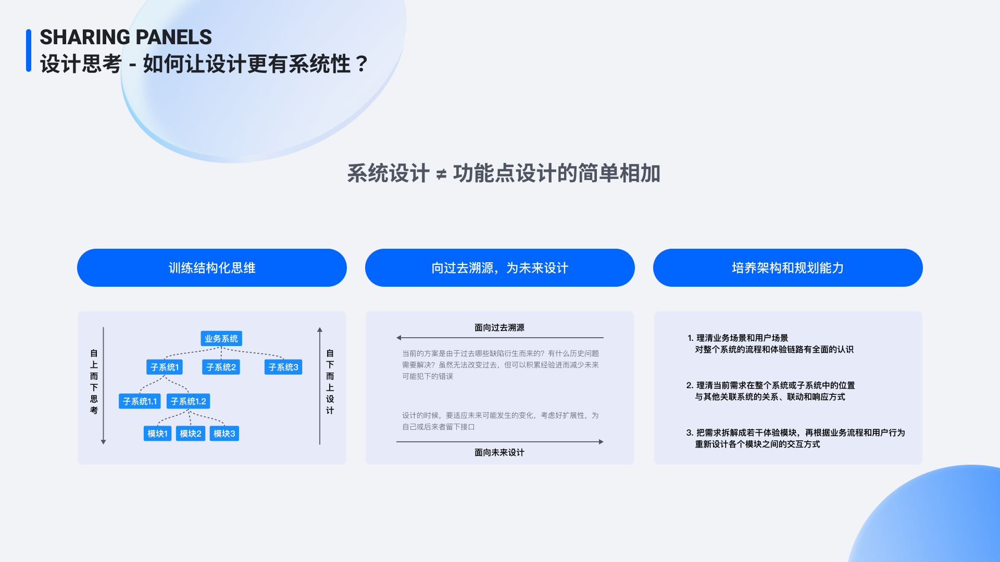

腾讯会议 · 录制功能体验优化项目设计总结
01｜项目背景
本项目围绕腾讯会议录制体验展开，重点优化用户从「会议中录制」到「会后查找、观看、管理、分享录制文件」的完整链路。
在原有体验中，录制功能虽然已经具备基础能力，但用户在会议结束后、录制文件生成后、查找录制、回看录制以及分发录制等关键环节中，仍存在明显断点。录制文件更多像是一个被动生成的结果，而不是被有效承接、消费和传播的内容资产。
本项目的核心目标，是将录制从一个工具型功能，升级为覆盖 生成、沉淀、消费、管理、分发 的完整体验闭环。
02｜我的角色
在项目中，我担任 项目体验设计负责人、主交互设计师。
主要负责：
- 梳理录制文件从产生到消费分发的完整用户链路
- 定位核心体验问题与业务机会点
- 输出录制列表、录制详情、会议结束页、分享面板等核心方案
- 平衡业务增长、用户效率、安全策略与产品可用性
- 与产品、研发、视觉、测试团队协同推进方案落地
项目设计团队共 3 名设计师 参与。
03｜项目现状分析
我们首先主动分析了录制文件从产生到消费分发的全流程，按照用户行为将链路拆分为五个阶段：
- 会中录制
- 结束会议 / 录制生成
- 找到录制
- 查看录制
- 分享录制
通过对主持人和参会人的行为路径进行拆解后，我们发现录制体验中存在四类核心问题。

04｜核心体验问题
问题一：生成延迟，录制无承载
会议结束后，录制文件并不会立即完成生成，用户需要等待系统处理。但原流程中，会议结束后的承接不足，用户不知道录制正在生成，也不知道完成后应该去哪里查看。
这导致主持人在会议结束后容易中断任务，对录制文件的后续分发和消费缺乏明确预期。
问题二：查找入口深，端内无沉淀
用户想要找到录制文件时，往往需要通过官网管理入口、客户端个人中心或历史会议详情多次跳转。
录制文件虽然已经产生，但没有在腾讯会议客户端内部形成稳定、清晰的内容管理空间，导致用户查找成本高，录制消费链路不闭环。
问题三：回看效率低，服务场景少
录制详情页原有布局中，视频、转写文本、章节、发言人等信息没有形成高效协同。
用户回看录制时，更多依赖完整播放，难以通过章节、关键词、转写文本快速定位重点内容，尤其不适合中大型会议、培训、访谈、发布会等内容密度较高的场景。
问题四：安全性与易用性冲突
录制文件往往涉及企业会议内容，天然具备较强的安全属性。
但在分享阶段，过多权限选项会增加理解成本；过少权限控制又可能带来安全风险。如何在安全性、传播性和易用性之间取得平衡，是分享面板设计的关键问题。

05｜设计目标
基于业务诉求、用户诉求和体验问题，我们将本次项目的设计目标定义为四点：
1. 补全会后录制生成链路
让用户在会议结束后可以明确感知录制文件的生成状态，并获得清晰的后续查看入口。
2. 构建端内录制消费闭环
将录制文件沉淀到腾讯会议客户端内部，形成稳定的录制列表与内容管理空间，减少用户对官网后台和外部入口的依赖。
3. 提高录制查看消费效率
通过录制详情页布局优化、AI 转写、章节、时间线、发言人等能力，帮助用户更快定位重点内容。
4. 取得安全性与易用性的平衡
在分享面板中重新组织权限结构，降低用户理解和选择成本，同时保障企业会议内容安全。

06｜设计策略
围绕以上目标，我们制定了四个设计策略：
- 会议结束页补全承载链路：在会议结束后立即出现录制承接页面，明确告知用户录制已生成或正在生成，并提供直接查看入口。
- 构建端内录制文件管理空间：在客户端内新增录制列表，使录制文件可以在端内完成沉淀、查找和再次消费。
- 优化录制详情页的信息结构：以视频回放为核心，结合转写、纪要、章节、发言人、话题和 AI 能力，提高用户回看效率。
- 重构分享权限模型：将复杂、重叠的分享权限整合为更清晰的「指定分享」与「链接分享」模式。

07｜核心方案一：会议结束页体验优化
设计问题
原体验中，会议结束后只出现较轻量的提示弹窗，用户只能看到录制生成状态，缺少对后续内容消费的有效承载。
- 录制生成存在延迟，提示容易被忽略
- 弹窗只承载单一提示，无法沉淀更多会中内容
- 用户不知道后续应该在哪里查看、分发录制
- 主持人和参会人对录制文件的消费路径被切断
设计方案
我们新增了 会议结束页，在会议结束后直接承接会中录制内容。页面中展示会议基础信息、录制文件卡片、查看 / 分享入口、AI 总结入口、会后推荐操作，以及不同会议场景下的差异化内容承载。
通过这种方式，会议结束页不再只是一个结束反馈，而是成为录制消费链路的起点。
设计价值
会议结束页帮助用户在会议结束后的第一时间完成认知承接：主持人可以快速查看和分发录制，参会人可以直接进入录制内容，录制文件从「系统生成结果」变为「会后内容资产」。最终，单个录制文件打开次数提升约 6 倍，结束页面引流占比达到约 4 成。

08｜核心方案二：录制列表体验优化
设计问题
在原流程中，录制文件入口较深，用户需要通过官网后台、个人中心或历史会议详情进入。录制列表本身也存在信息组织问题：
- 入口深，查找难
- 检索能力单一，只支持日期范围和关键词
- 信息展示冗余，真正有助于查找的信息不突出
- 录制文件未在端内形成稳定管理空间
- 用户难以通过场景、时间、类型快速定位录制
设计方案一：新增端内录制列表闭环
我们在腾讯会议客户端中新增录制列表入口，将录制文件前置到端内空间。录制列表以卡片形式展示录制文件，并保留缩略图、标题、录制时间、创建者、时长、操作入口等关键信息。
设计方案二：保留筛选和检索能力
考虑到老用户已有的查找习惯，我们保留了基础筛选能力，包括存储位置筛选、录制场景筛选、会中 / 会外筛选、关键词搜索。在保证新结构清晰的同时，不破坏原有用户的认知路径。
设计方案三：强化“找”的能力
- AI 内容搜索：支持用户通过内容关键词查找录制全文，提高特定内容任务的查找成功率。
- 时间分组与时间线滚动条：按月份和年份组织录制文件，适合大时间跨度下快速定位。
- 以目标为导向的筛选：支持按会议录制、录屏、本地文件等类型进行筛选。
- Hover 静音播放：用户在列表中悬停即可预览内容，降低打开成本。
设计价值
通过录制列表优化，录制文件不再依赖外部入口，而是在腾讯会议端内形成完整的管理与消费闭环。每个录制文件打开次数提升约 6 倍，录制 Tab 引流提升约 2 成，可用性测试中查找成功率提升至约 90%。

09｜核心方案三：录制详情页体验优化
设计问题
录制详情页是用户真正消费录制内容的核心场景。原页面中存在较多无关或重复区域，视频、文本和辅助能力的层级不清晰，导致用户难以高效回看。
- 无关区域占比过高
- 有效内容区域较小
- 视频播放、转写文本、章节等信息缺少联动
- AI 能力没有形成稳定承载位置
- 不同会议规模和回看场景缺少差异化布局
设计方案一：突出视频回放核心地位
新版详情页将视频播放作为页面核心区域，围绕视频组织转写、章节、发言人和话题内容。用户可以先通过视频理解会议上下文，再通过章节和转写快速定位重点片段。
设计方案二：加入 AI 辅助定位区域
我们在视频下方新增 AI 辅助定位区域，用于承载智能章节、自动定位发言人、自动归纳话题、关键片段辅助识别等能力。这些能力被放置在视频下方，作为观看进度和内容定位的补充，而不是干扰主播放区域。
设计方案三：转写文本与时间线联动
在右侧区域承载 AI 转写、纪要和设置能力，用户点击文本内容时，可以联动视频时间线，直接跳转到对应片段。这样，文本不再只是附属信息，而是成为用户快速回看和定位内容的重要工具。
设计方案四：提供多种详情页布局
常规布局
适合中小规模会议回顾，例如小组讨论、公司会议、在线课堂、企业培训等场景。
文本布局
适合中型会议回顾，例如在线面试、新闻发布会、线上座谈会等文本信息更重要的场景。
视频布局
适合大型会议回顾，例如产品发布会、演出活动、公司年会等视频内容更重要的场景。
设计价值
新版录制详情页提高了页面空间利用率，也提升了用户从视频、文本和 AI 能力中定位重点内容的效率。在可用性测试中，用户通过转写文本、章节和时间线定位内容的效率明显提升，整体回看效率提升约 80%。

11｜项目结果
本次腾讯会议录制体验优化，围绕录制文件的完整生命周期进行了系统性重构。

12｜项目总结
这个项目的重点并不只是优化某一个页面，而是重新理解录制功能在腾讯会议中的系统位置。
过去，录制只是会议过程中的一个附属功能；优化后，录制被重新定义为会议结束后的内容资产，承接了会后回看、信息沉淀、知识复用和内容分发等更多价值。
在设计过程中，我们没有单纯叠加功能点，而是从系统设计角度出发，重新梳理录制在会议前后链路中的位置：
- 会议结束后，需要有明确承接
- 录制文件需要在端内形成管理空间
- 用户回看时，需要围绕内容效率组织页面
- 分享时，需要在安全与传播之间建立清晰规则
最终，项目通过 系统设计 + 功能点设计 的方式，完成了从单点优化到链路闭环的升级。

13｜设计思考
这次项目让我更明确地意识到，复杂产品中的体验问题，往往不是单个页面不好用，而是系统链路没有被完整打通。
因此，在处理复杂业务时，设计不能只停留在界面层，而需要从三个层面同时推进：
1. 训练结构化思维
先理解业务系统和用户路径，再拆解子系统、模块和关键节点，避免只在局部页面上做优化。
2. 向过去溯源，为未来设计
分析现有方案为什么形成，理解历史包袱和业务限制，同时为后续扩展预留接口，减少未来重复返工。
3. 培养架构和规划能力
将单个需求放回整个系统中判断，理解它与其他模块、其他用户角色、其他业务目标之间的关系，再设计更稳定的交互结构。
